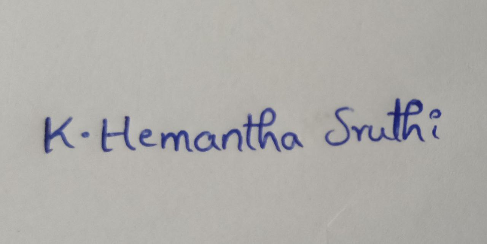

Korangi Hemantha Sruthi
Email: sruthikorangi.25@gmail.com
Contact: 8179933449
Career Objective:
To work in a challenging and dynamic environment and to keep adding value to the organization that I represent, while also upgrading my skills and knowledge.
Educational Details:
Godavari Institute of Engineering and Technology
B.Tech(EEE)
CGPA: 8.05
SASI Junior College
Intermediate
CGPA: 9.1
SASI E.M High School
SSC
CGPA: 9.7
Internships:
Internship done on HYBRID AND ELECTRIC VEHICLES from PANTECH.
Internship done on JAVA(Web Development) from PANTECH.
Technical Skills:
C Programming
Python Programming
HTML & CSS
Project Details:
Project Name: Intelligent DC Charging System for Electric Vehicles using Three-Phase Grid System and ANN-Controlled PWM Rectifier.
This project focuses
on creating a sustainable and intelligent charging solution that can adapt to real-time conditions,
making it suitable for various environments and grid scenarios.The innovative use of ANN technology
not only enhances the charging efficiency but also contributes to the overall stability of the power
grid by intelligent load management. Through this project, the aim is to pave the way for a more
efficient, adaptive, and eco-friendly electric vehicle charging infrastructure.
Strengths:
Adaptive and Flexible
Accuracy and attention to detail
Self motivated and Hard working
Quick learner
Certifications:
Achieved certificate of C Programming by UDEMY
Achieved certificate of PYTHON Programming by Microsoft Technology Associate
Achieved certificate of GIET CRT LEVEL ! PYTHON by REFERENCE GLOBE NATIONAL LEVEL
Hobbies:
Playing Badminton
LIstening Music
Dancing
Cooking
Declaration:
I hereby declare that the above furnished information is true to the best of my knowledge and belief.
Signature:
